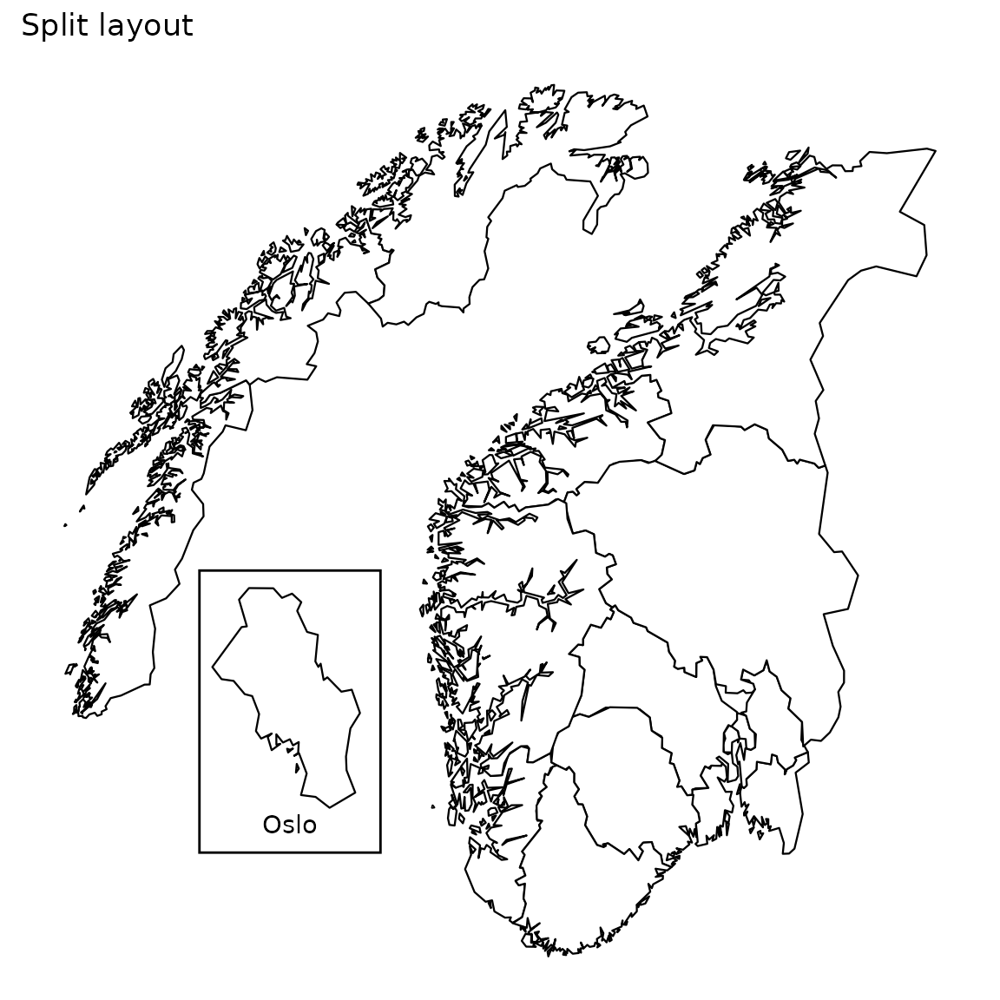

library(csmaps)
#> csmaps 2024.9.26
#> https://www.csids.no/csmaps/
library(ggplot2)
library(data.table)
library(magrittr)Naming scheme
The naming scheme has the following pattern: scope_geogranularity_type_border_layout_Rclass.
Scope
This is what content the map data contains. Currently we focus on these 2 scopes:
- Country (Norway).
- City (Oslo).
Geogranularity
This is the geographic granularity, which defines the border of county, municipality and ward.
Type
The type of the data object to distinguish whether it’s a geographical map or coordinate for label positions. - Map: Map data. - Position geolabels: Geographical coordinates for the position of labels, e.g. “county03” or “Oslo”. - Position title (insert oslo): Geographical coordinate for position of title. So far it’s only for layout: insert_oslo. (see example)
Border
Due to recent redistricting, there exist multiple versions of county/municip borders. We provide maps that match the borders in the following years:
- 2024: The current border, this map contains 15 counties.
- 2020: Border before redistricting in 2024. This map contains 11 counties.
- 2019: Border before redistricting in 2020. This map contains 18 counties.
- 2017: Border before redistricting in 2018. This map contains 19 counties.
More information on counties in Norway can be found here.
Layout
See the layout section below.
R class
R class for the map object.
-
data.table: applicable for maps and label/title coordinates. -
sf: simple feature for spatial vector data. More on sf.
Layout
We have 3 layout options for Norway map: default, split and insert Oslo.
For the Oslo map, we only have the default layout.
Norway: default
pd <- copy(csmaps::nor_county_map_b2024_default_dt)
q <- ggplot()
q <- q + geom_polygon(
data = pd,
aes(
x = long,
y = lat,
group = group
),
color="black",
fill="white",
linewidth = 0.4
)
q <- q + theme_void()
q <- q + coord_quickmap()
q <- q + labs(title = "Default layout")
q
Norway: split
pd <- copy(csmaps::nor_county_map_b2024_split_dt)
q <- ggplot()
q <- q + csmaps::annotate_oslo_nor_map_bxxxx_split_dt()
q <- q + geom_polygon(
data = pd,
aes(
x = long,
y = lat,
group = group
),
color="black",
fill="white",
linewidth = 0.4
)
q <- q + theme_void()
q <- q + coord_quickmap()
q <- q + labs(title = "Split layout")
q
Norway: insert oslo
pd <- copy(csmaps::nor_county_map_b2024_insert_oslo_dt)
q <- ggplot()
q <- q + geom_polygon(
data = pd,
aes(
x = long,
y = lat,
group = group
),
color="black",
fill="white",
linewidth = 0.4
)
q <- q + annotate(
"text",
x = csmaps::nor_xxx_position_title_insert_oslo_b2024_insert_oslo_dt$long,
y = csmaps::nor_xxx_position_title_insert_oslo_b2024_insert_oslo_dt$lat,
label = "Oslo"
)
q <- q + theme_void()
q <- q + coord_quickmap()
q <- q + labs(title = "Insert Oslo layout")
q
Oslo ward: default
pd <- copy(csmaps::oslo_ward_map_b2024_default_dt)
q <- ggplot()
q <- q + geom_polygon(
data = pd,
aes(
x = long,
y = lat,
group = group
),
color="black",
fill="white",
linewidth = 0.4
)
q <- q + theme_void()
q <- q + coord_quickmap()
q <- q + labs(title = "Oslo wards")
q